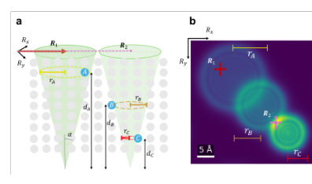
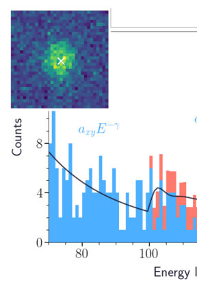
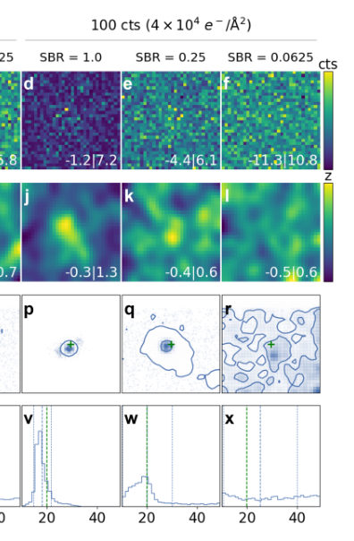
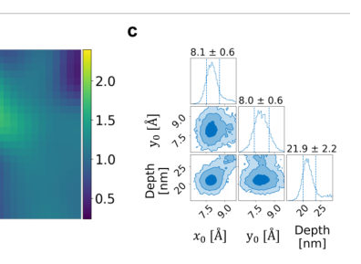
Authors: Justinas Šlepavičius, Antanas Vaitkus, Andrius Merkys, Saulius Gražulis, Linas Vilčiauskas
Type: theory · Category: disordered systems and neural networks · PDF: https://arxiv.org/pdf/2610.11246v1
Analysis basis: full PDF text, analyzed in chunks
Topic relevance: methods for driven-dissipative 2/5 · analog quantum simulation 1/5
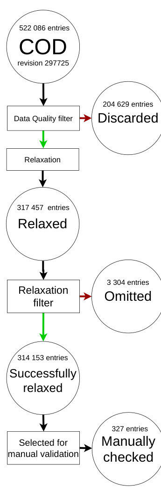
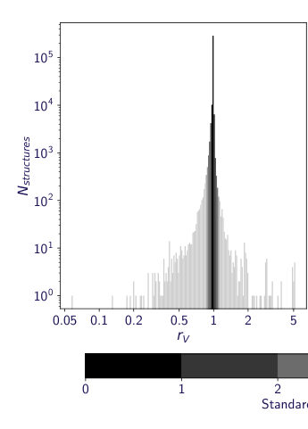
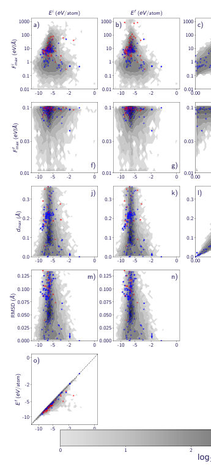
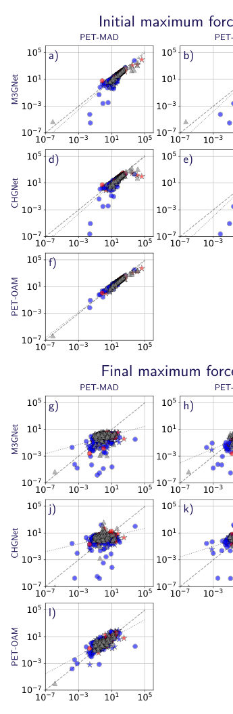
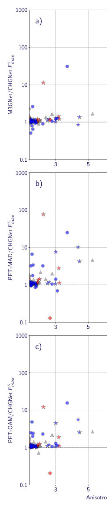
Summary. This work assesses whether advanced Machine Learning Interatomic Potentials (MLIPs) can automate the validation of crystal structures in the COD database. By relaxing structures using multiple MLIPs, the authors found that while these models are powerful screening tools, they are model-dependent and fail to detect all types of structural errors independently. Therefore, combining multiple MLIPs is recommended for reliable validation.
Why it may be interesting. While focused on solid-state crystallography, the core methodology—using neural networks (MLIPs) to predict physical properties and screen large datasets for subtle deviations—is highly relevant to developing robust simulation tools for complex quantum many-body systems.
Main problem. The paper aims to automate the physical plausibility validation of crystallographic data in the Crystallography Open Database (COD), a task traditionally reliant on slow and error-prone expert judgment.
Main result. MLIP relaxation is a useful but model-dependent screening tool; no single model detects all types of structural errors, suggesting that combining multiple MLIPs is preferable.
Method. The authors employed universal Machine Learning Interatomic Potentials (MLIPs)—including M3GNet, CHGNet, PET-MAD, and PET-OAM—to perform high-throughput structural relaxations on COD crystal structures.
Model / system. The physical system is the vast dataset of crystal structures from the COD. The methodology involves filtering these structures and then relaxing them using various MLIPs, which are trained to reproduce DFT calculations.
Key observables. Relaxed cell volumes, maximum atomic forces, energy values, Root Mean Square Deviation (RMSD), and maximum atomic displacement distance (dmax).
Important parameters / regimes. The study analyzes performance across different MLIPs and notes that the relaxation is performed at 0 K, while many structures were determined at finite temperatures.
Assumptions / limitations. The primary assumption is that structural inconsistencies can be flagged by observing deviations in the relaxed structure compared to the deposited one, though the authors caution that MLIPs reproduce DFT, not necessarily experimental geometries.
Figures summary. Figures illustrate pairwise correlations between various structural descriptors (volume, energy, RMSD, dmax) across different MLIP pairs, showing varying degrees of agreement.
Paper structure. The paper first establishes the need for automation in COD validation. It then details the use of MLIPs for relaxation, analyzing diagnostics like volume change and force convergence. Finally, it compares multiple MLIPs, showing model-specific failures and concluding that a multi-model approach is necessary.
The Crystallography Open Database (COD) contains over half a million experimentally determined crystal structures. Validation of crystallographic data proceeds at three hierarchical levels, the third of which assesses the physical plausibility of structures. This level has typically relied on empirical heuristics or expert judgment, which are slow and error-prone given the size of crystallographic databases and the rate at which new structures are deposited. Here we assess whether universal machine-learning interatomic potentials (MLIPs) can automate this level of validation. Of the 522 086 COD entries, 317 457 (60.8\%) passed a data-quality filter removing disordered structures, formula mismatches and unmodelled solvent. These structures were relaxed with M3GNet, and 314 153 (99.0\%) converged without a large change in cell volume. For most entries the relaxed and deposited volumes are nearly identical. Convergence and volume change thus provide simple criteria for identifying relaxations that do not confirm the deposited structure. A manual inspection of 327 structures showed that no single descriptor threshold (energy, largest force, or atomic displacement) separates valid from invalid structures. A comparison of M3GNet, CHGNet, PET-MAD and PET-OAM on 524 selected structures revealed model-specific failures: M3GNet distorts cyclopentadienyl and other $π$ ligands, and both M3GNet and CHGNet distort thiophene and thiazole rings, whereas the PET models preserve these motifs. All models detected missing hydrogen atoms, and at least some detected spurious hydrogens, incorrectly assigned atom types, and two previously unreported coordinate errors. No single model detected all error types. MLIP relaxation is therefore a useful but model-dependent screening tool, and combining several models is preferable to relying on any single one.
Authors: Kazuma Murata, Ryunosuke Terasawa, Hiroaki Ishizuka
Type: theory · Category: other · PDF: https://arxiv.org/pdf/2610.11244v1
Analysis basis: full PDF text, analyzed in chunks
Topic relevance: Keldysh / 2PI / non-Gaussian methods 2/5 · analog quantum simulation 1/5
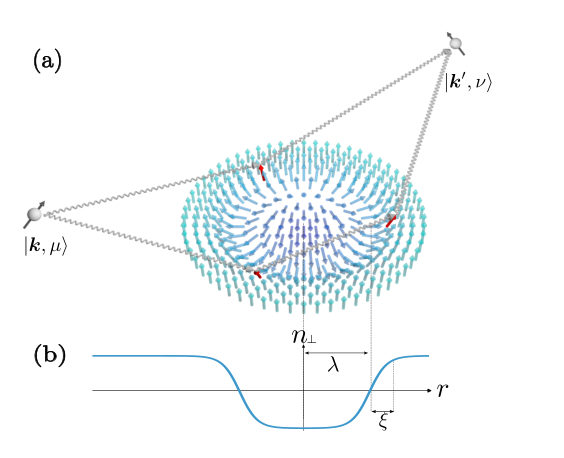
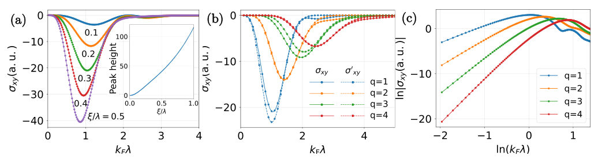
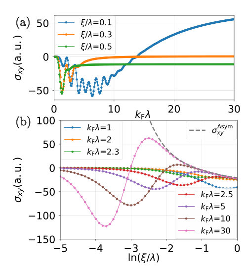
Summary. This theoretical work investigates the topological Hall effect generated by skyrmions, demonstrating that the effect is highly tunable by controlling the skyrmion's physical dimensions (size and shape). By analyzing the conductivity in the weak-coupling limit, the authors predict an optimal condition for maximum THE when $k_F\lambda \sim 1$. These findings establish a pathway for engineering magnetic materials to control charge transport via magnetic texture engineering.
Why it may be interesting. While the core physics is condensed matter magnetism, the detailed theoretical modeling of transport coefficients ($\sigma_{xy}$) based on geometric parameters ($\lambda, \xi$) and their tunability provides a rich framework for understanding how nanoscale magnetic textures dictate electronic properties, which is relevant to quantum transport studies.
Main problem. The study investigates how the topological Hall effect (THE) induced by sparsely distributed magnetic skyrmions can be enhanced and controlled by engineering the skyrmion's size and shape.
Main result. The THE is found to depend significantly on the skyrmion size and shape, exhibiting a peak when the Fermi wave vector times the skyrmion size ($k_F\lambda$) is near unity, and its magnitude can be tuned by the domain-wall width.
Method. The analysis uses a theoretical formalism based on angular-momentum eigenstates and derives the Hall conductivity ($\sigma_{xy}$) using the second Born approximation for weak electron-magnon coupling.
Model / system. The system models electron transport in a 2D itinerant electron gas coupled to localized magnetic moments forming skyrmions. The Hamiltonian describes this coupling, and the skyrmion structure is characterized by a radius ($\lambda$) and domain-wall width ($\xi$).
Key observables. Topological Hall conductivity ($\sigma_{xy}$), which is the primary measurable quantity.
Important parameters / regimes. Skyrmion size ($\lambda$), domain-wall width ($\xi$), Fermi wave vector ($k_F$), and the dimensionless parameters $k_F\lambda$ and $\xi/\lambda$.
Assumptions / limitations. The analysis is performed in the weak-coupling limit and assumes clean materials where the electron mean-free path is comparable to or larger than the skyrmion size.
Figures summary. Figure 2 shows the dependence of $\sigma_{xy}$ on $k_F$ and $\xi/\lambda$ for different skyrmion numbers ($q$). Figure 3 illustrates the dependence of $\sigma_{xy}$ on the skyrmion size ($\lambda$) for $q=1$.
Paper structure. The paper systematically analyzes the Hall conductivity ($\sigma_{xy}$) by deriving expressions in different limits: the general case using scattering theory, the large skyrmion limit ($\lambda o \infty$), and the small skyrmion limit ($k_F\lambda o 0$).
The topological Hall effect of skyrmions is a promising electrical probe of magnetic textures, but its small magnitude limits applications. In this work, we theoretically investigate the topological Hall effect induced by sparsely distributed skyrmions in the weak-coupling limit, focusing on how the size and shape of the skyrmion affect the Hall effect. To this end, we used a formalism based on angular-momentum eigenstates, which enables systematic analysis within reasonable computation time. We found that, in clean materials where the electron mean-free path is comparable to or larger than the skyrmion size, the Hall effect depends considerably on the size and shape of the skyrmion. In particular, the Hall effect is largest when $k_Fλ\sim 1$, and its magnitude can be tuned by the domain-wall width of skyrmions. These findings provide a basis for investigating how the shape and size of skyrmions affect transport properties and demonstrate that the topological Hall effect is controllable by engineering these properties.
Authors: Michael Deimetry, Timothy Petersen, Matthew Weyland, Scott Findlay
Type: both · Category: other · PDF: https://arxiv.org/pdf/2610.11053v1
Analysis basis: full PDF text, analyzed in chunks
Topic relevance: quantum measurements 2/5 · Keldysh / 2PI / non-Gaussian methods 1/5




Summary. This work presents a novel technique to map the 3D location of dopants in materials using only a single, out-of-focus spectroscopic image from STEM-EELS. By relating the measured disk size to the dopant depth via geometric principles and employing robust Bayesian inference, the authors achieve nanometer-scale depth resolution. This method is crucial for characterizing nanoscale devices where precise spatial mapping of impurities is essential.
Why it may be interesting. While the core physics is materials science, the rigorous application of Bayesian inference and statistical modeling to extract physical parameters from inherently noisy, low-signal-to-noise spectroscopic data is highly relevant to computational physics and data analysis in quantum systems.
Main problem. The paper addresses the challenge of determining the three-dimensional (3D) distribution of dopant atoms within a material using only a single, out-of-focus spectroscopic image obtained via STEM-EELS.
Main result. The authors successfully demonstrate that the dopant depth can be accurately retrieved (within a few nanometers) by analyzing the geometric relationship between the measured disk radius and the probe convergence angle, even in the presence of noise and host material scattering.
Method. The methodology combines geometric analysis (relating disk radius to depth) with advanced statistical inference, primarily using Bayesian methods applied to the full 3D spectral data cube to quantify uncertainty.
Model / system. The physical system is a doped semiconductor or oxide material analyzed using Scanning Transmission Electron Microscopy coupled with Electron Energy Loss Spectroscopy (STEM-EELS). The core model relates the observed disk radius in an out-of-focus image to the dopant's depth via geometric approximations.
Key observables. Disk radius ($r$), deduced dopant depth ($d$), standardized score map ($z_{xy}$), and posterior probability distributions for model parameters.
Important parameters / regimes. Probe convergence semi-angle ($\alpha$), dopant depth ($d$), noise levels (Poisson statistics), and Signal-to-Background Ratio (SBR).
Assumptions / limitations. The primary assumptions include the geometric relationship $r \approx \alpha d$ and the assumption that background and edge shapes are constant across the analyzed region, though the Bayesian approach mitigates some of these.
Figures summary. Figures illustrate the contrast formation mechanism (disk radius vs. depth), compare three analysis techniques (background subtraction, z-score map, Bayesian inference) across varying noise levels, and show validation by subtracting the model prediction from the raw data.
Paper structure. The paper progresses from establishing the core physical principle (depth-from-focus) using simulations, to developing and comparing multiple data analysis techniques (Frequentist vs. Bayesian), and finally validating the quantitative depth retrieval using complex experimental data sets.
Increasing miniaturization of nanoscale devices makes determining the three-dimensional distribution of dopants increasingly important. In out-of-focus spectroscopic scanning transmission electron microscopy images, we show that dopant atoms appear as disks with radii relating to dopant depth, allowing the three-dimensional distribution of dopants to be determined from simple geometric analysis of a single out-of-focus image. Through numerical experiments on Si-doped graphene we validate statistical detection and Bayesian inference methods to quantify confidence and uncertainties while making the analysis more robust at lower dose. We present proof-of-concept experimental data from an Fe-doped spinel, retrieving dopant depth to within around 2 nanometres.
Authors: Arianna Cantarella, D. K. Andrea Phan Huu, Paolo Santini, Michael R. Wasielewski, Alessandro Chiesa, Stefano Carretta
Type: theory · Category: other · PDF: https://arxiv.org/pdf/2610.10839v1
Analysis basis: full PDF text, analyzed in chunks
Topic relevance: Keldysh / 2PI / non-Gaussian methods 1/5 · analog quantum simulation 1/5 · correlated / nonlocal dissipation 1/5 · driven-dissipative phase transition 1/5 · methods for driven-dissipative 1/5 · quantum measurements 1/5
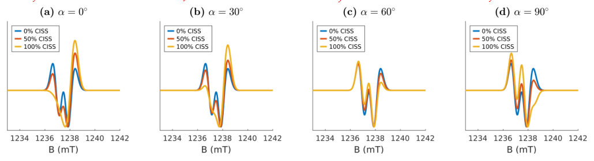
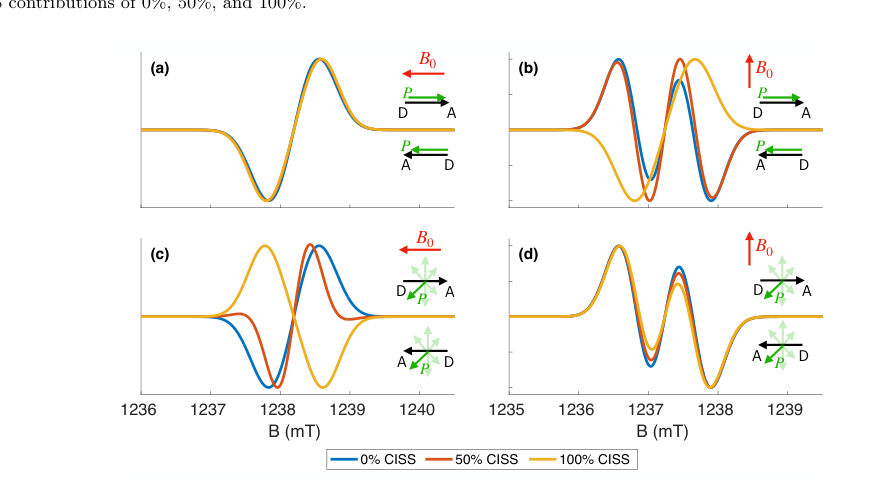
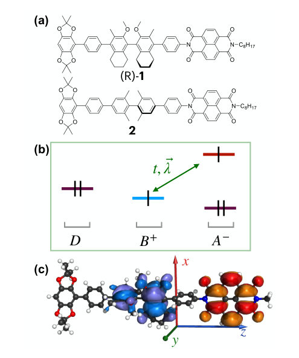
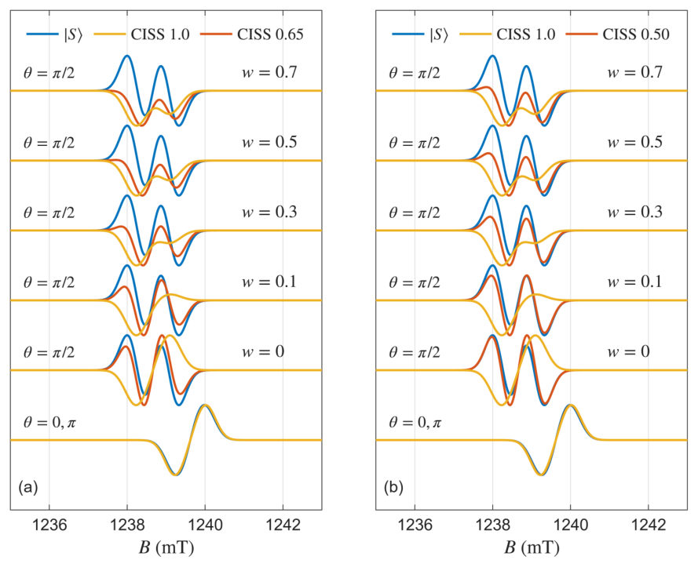
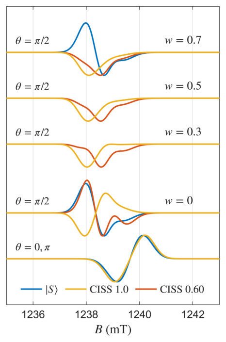
Summary. This paper investigates Chirality-Induced Spin Selectivity (CISS) in charge transfer processes by simulating Electron Paramagnetic Resonance (EPR) spectra. The authors use the radical-pair Hamiltonian to predict how molecular chirality influences the spin state of separated charges. By comparing simulated spectra under various field orientations, they provide a powerful, measurable diagnostic tool to validate theoretical models of CISS.
Why it may be interesting. This work directly bridges molecular chirality, spin physics, and measurable spectroscopic techniques (EPR), which is highly relevant to AMO physics, particularly in the study of open quantum systems and spin dynamics in molecular complexes.
Main problem. The primary goal is to validate theoretical models for Chirality-Induced Spin Selectivity (CISS) in photoinduced charge transfer (PCT) by comparing predicted Electron Paramagnetic Resonance (EPR) spectra with experimental observables.
Main result. The study demonstrates that the TREPR spectrum is a sensitive diagnostic tool, showing distinct spectral signatures when CISS effects are present, particularly when the magnetic field is oriented perpendicular to the dipolar axis in aligned samples.
Method. The authors compute spin dynamics using the radical-pair Hamiltonian and calculate the resulting Triplet Electron Paramagnetic Resonance (TREPR) spectra via linear response theory.
Model / system. The system involves radical pairs formed during charge transfer in chiral molecules, governed by a Hamiltonian incorporating electron-electron interactions and spin-orbit coupling (SOC). The analysis extends beyond simple collinear assumptions to model general spin polarization orientations.
Key observables. The primary diagnostic tool is the TREPR spectrum; CISS efficiency ($\eta$) is related to the triplet population $p = (1 - \cos \chi)$.
Important parameters / regimes. The magnetic field ($\mathbf{B}_0$) orientation relative to the dipolar axis, the degree of spin polarization ($\chi$), and the molecular geometry parameters.
Assumptions / limitations. Initial models often assume the CISS axis is collinear with the dipolar axis, and some analyses assume the initial state is a pure spin state, neglecting post-projection coherences.
Figures summary. Figures simulate powder and oriented-sample TREPR spectra showing spectral changes for varying CISS contributions (0%, 50%, 100%) and field/polarization orientations relative to the dipolar axis.
Paper structure. The work progresses by first establishing the general Hamiltonian and the TREPR calculation method, then moving to simulations that explore non-collinear polarization states using oriented samples (LC) to reveal key spectral signatures.
Several models for chirality-induced spin selectivity (CISS) in charge transfer have been proposed, but rarely compared directly with experiments. This step is essential for their validation and future progress of the field. Here we investigate a broad class of radical pair states associated with different microscopic models by computing the related electron-paramagnetic resonance spectra. This allows us to evidence peculiar signatures of different radical pair states, to study their experimental accessibility and identify conditions to verify proposed microscopic models.
Authors: Haohang Cheng, Pengju Wang, Hongrui Qin, Rongkun Han, Dong Pan, Dahai Wei, Jianhua Zhao
Type: experiment · Category: other · PDF: https://arxiv.org/pdf/2610.12018v1
Analysis basis: full PDF text, analyzed in chunks
Topic relevance: analog quantum simulation 1/5 · driven-dissipative phase transition 1/5 · quantum measurements 1/5

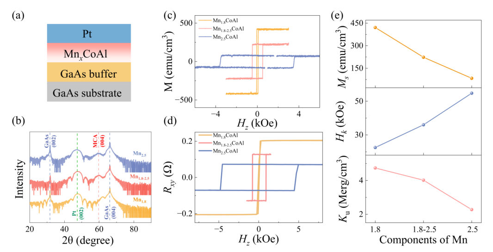
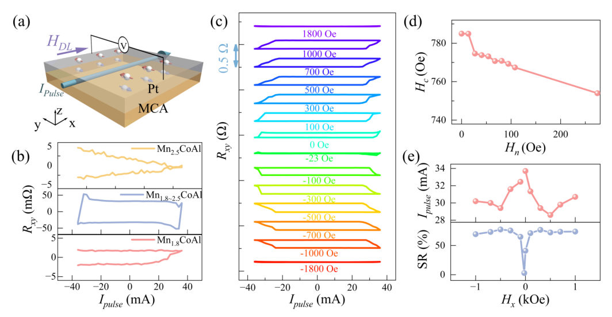
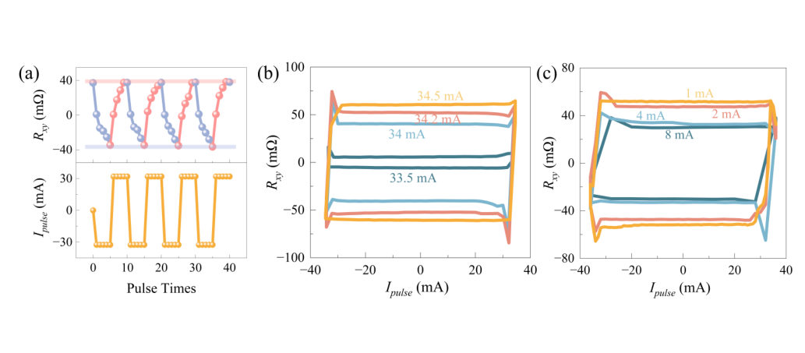
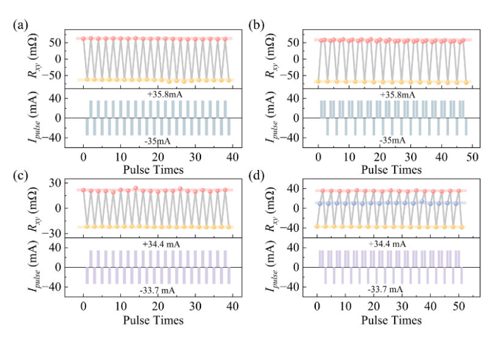
Summary. This work demonstrates a breakthrough in spintronics by utilizing a vertically composition-graded $ ext{Mn-Co-Al}$ Heusler heterostructure to achieve field-free magnetization control. The gradient structure enables stable, accumulative multistate switching, allowing the device to function as a reconfigurable logic element capable of performing all fundamental Boolean operations (AND, OR, NAND, NOR) purely electrically.
Why it may be interesting. While the core physics is in condensed matter spintronics, the concept of using engineered material gradients to induce complex, non-linear, and programmable switching behavior is relevant to understanding emergent phenomena in complex quantum or many-body systems.
Main problem. The goal is to develop field-free, reconfigurable spin logic by integrating nonvolatile storage and logic functions into a single physical unit to reduce data-transfer energy consumption.
Main result. The compositionally graded $ ext{Mn}_x ext{CoAl}/ ext{Pt}$ heterostructure successfully demonstrates deterministic field-free SOT switching, accumulative multistate switching, and the experimental realization of all four basic Boolean logic gates (AND, OR, NAND, NOR) at zero external magnetic field.
Method. The research involves fabricating and characterizing vertically composition-graded magnetic films using MBE, followed by electrical transport measurements using current pulses to induce and read out magnetization states.
Model / system. The physical system is a $ ext{Mn}_x ext{CoAl}/ ext{Pt}$ Heusler heterostructure where the $ ext{Mn}$ content is varied vertically across the film. This gradient introduces magnetic inhomogeneity, which, combined with Dzyaloshinskii-Moriya interaction (DMI), enables novel magnetic switching behavior.
Key observables. Hall resistance ($ ext{R}_{xy}$) used to read logic states (positive/negative), saturation magnetization ($ ext{M}_s$), effective anisotropy field ($ ext{H}_k$), and the ability to perform logic operations (AND, OR, NAND, NOR).
Important parameters / regimes. Zero external magnetic field, current pulse amplitude/polarity (used to tune between binary and multilevel switching), and the composition gradient itself ($ ext{Mn}_{1.8-2.5} ext{CoAl}$).
Assumptions / limitations. The field-free switching and multistate behavior are attributed to the cooperative effects of DMI-related chiral reversal and the magnetic inhomogeneity induced by the vertical composition gradient.
Figures summary. Figures illustrate the structure (gradient), magnetic hysteresis loops, anomalous Hall effect curves, and detailed pulse protocols demonstrating the switching sequence required to implement the four Boolean logic gates.
Paper structure. The paper progresses from establishing the need for energy-efficient logic, characterizing the magnetic properties of the gradient structure versus uniform controls, demonstrating field-free SOT switching and multistate memory, and finally realizing the full set of Boolean logic operations using tailored current pulses.
Spintronic logic-in-memory provides a route to reducing data-transfer energy consumption and accelerating computation by integrating nonvolatile storage and logic functions within a single physical unit. Here, we investigate field-free spin-orbit-torque (SOT) switching and reconfigurable spin logic in a vertically composition-graded MnxCoAl/Pt heterostructure. In contrast to the uniform-composition Mn1.8CoAl/Pt and Mn2.5CoAl/Pt control devices, the Mn1.8-2.5CoAl gradient device exhibits deterministic SOT switching under zero external magnetic field. Dzyaloshinskii-Moriya interaction (DMI)-related measurements reveal a finite characteristic effective-field scale, indicating the involvement of chiral magnetization-reversal processes. Meanwhile, the vertical composition gradient introduces magnetic inhomogeneity that can modify domain nucleation and propagation, and the combined effects are consistent with the observed field-free switching behavior. The composition-gradient device further exhibits accumulative multistate switching with stable intermediate Hall-resistance states under zero magnetic field, whereas the uniform-composition controls do not show comparable stable multistate behavior. By tailoring the amplitude, polarity, and sequence of current pulses, the device can be tuned between binary and multilevel switching modes, enabling the experimental realization of AND, OR, NAND, and NOR Boolean operations within the same Hall-bar device without any external magnetic field. These results extend Mn-Co-Al Heusler heterostructures from field-assisted SOT switching toward field-free magnetization control, multistate operation, and reconfigurable spin logic through vertical composition engineering.
Authors: Alice Houard, Thomas Bunel, Matteo Conforti, Saliya Coulibaly, Arnaud Mussot
Type: both · Category: other · PDF: https://arxiv.org/pdf/2610.11413v1
Analysis basis: full PDF text, analyzed in chunks
Topic relevance: driven-dissipative phase transition 1/5 · interference shaping light 1/5
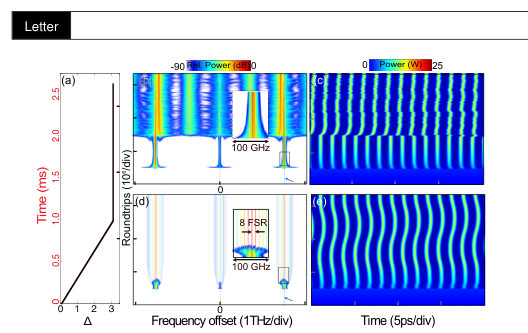
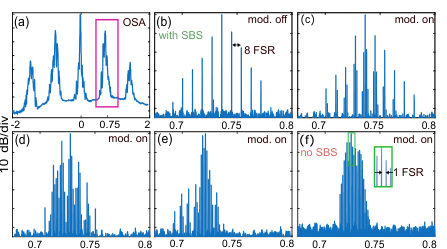
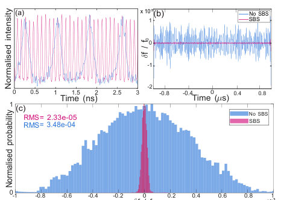
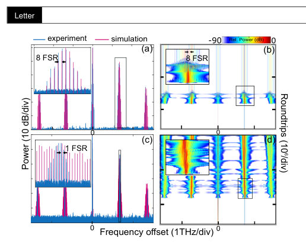
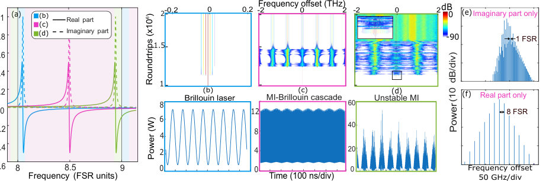
Summary. This research demonstrates that Stimulated Brillouin Scattering can stabilize modulation instability in optical fiber resonators. By incorporating SBS into the system dynamics, the instability spectrum is shaped into a stable cascade, a phenomenon governed by the real part of the Brillouin response. This establishes SBS as a controllable degree of freedom for managing nonlinear light propagation in Kerr resonators.
Why it may be interesting. This work provides a concrete example of how a nonlinear wave interaction (SBS) can act as a stabilizing mechanism in a complex optical cavity system, offering control over nonlinear dynamics.
Main problem. The paper investigates how Stimulated Brillouin Scattering (SBS) influences Modulation Instability (MI) within Fiber Fabry-Perot (FFP) resonators.
Main result. SBS stabilizes the MI spectrum, shaping it into a stable multi-free-spectral-range cascade that would otherwise be unstable. This stabilization is attributed to the real part of the Brillouin response.
Method. The study combines numerical simulations with experimental measurements using an FFP cavity, analyzing both spectral and time-domain dynamics.
Model / system. The physical system is a Fiber Fabry-Perot resonator, modeled using a mean-field approach extended to incorporate the Brillouin response function. The dynamics are governed by the interplay between Kerr nonlinearity and SBS.
Key observables. MI sideband positions, spectral stability, time-domain pulse train characteristics (e.g., 1.28 GHz vs. 10.21 GHz), and reduction in instantaneous frequency fluctuations.
Important parameters / regimes. The relative position of the Brillouin frequency shift with respect to the cavity resonances (e.g., 8 FSR spacing) is critical for determining the system's stability regime.
Assumptions / limitations. SBS suppression in the experiment is achieved using a phase modulator (PM), and time-domain dynamics require filtering side lobes from OSA/BOSA measurements.
Figures summary. Figures compare numerical and experimental spectra/time-domain evolution with and without SBS control, illustrating the transition from unstable MI to a stable Brillouin-MI cascade.
Paper structure. The paper develops the model, presents numerical simulations comparing SBS on/off, details the experimental setup and measurements, and concludes by analyzing the physical origin of the stabilization effect.
We report the experimental and numerical demonstration of stimulated Brillouin scattering-induced stabilization of Kerr-driven modulation instability in fiber Fabry--Perot resonators. We show that Brillouin scattering shapes the modulation instability spectrum into a stable multi--free-spectral-range cascade that is otherwise unstable in the absence of Brillouin effects. We further identify that this stabilization originates from the real part of the Brillouin response, leading to an asymmetric Kerr-Brillouin interaction governed by the relative position of the Brillouin frequency shift with respect to the cavity resonances. These results establish stimulated Brillouin scattering as an additional degree of freedom for controlling nonlinear dynamics in Kerr resonators.
Authors: Tatiana de Picoli, Ian Wojtowicz, Jukka I. Vayrynen
Type: theory · Category: other · PDF: https://arxiv.org/pdf/2610.10814v1
Analysis basis: full PDF text, analyzed in chunks
Topic relevance: Keldysh / 2PI / non-Gaussian methods 1/5 · analog quantum simulation 1/5
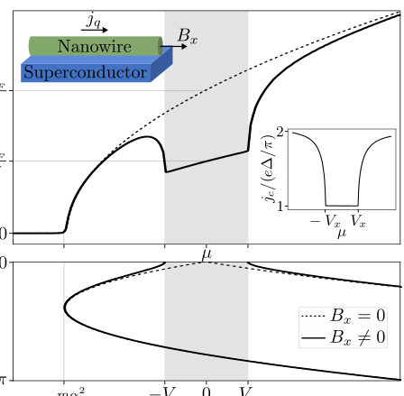
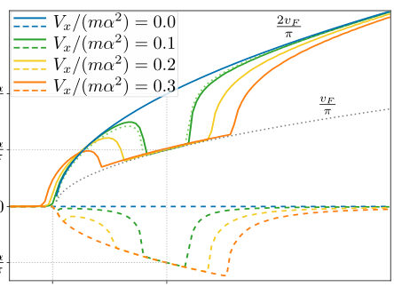
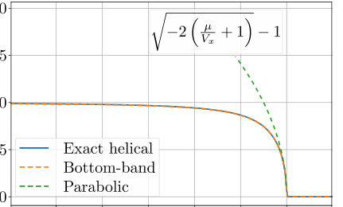
Summary. This paper proposes using the supercurrent response as a direct, bulk probe to distinguish between trivial and topological superconducting phases in nanowires. By analyzing the superfluid stiffness ($ ho_s$) in a Rashba nanowire, the authors predict a characteristic non-monotonic suppression of the supercurrent when the system enters the topological phase. This offers an experimental route independent of relying solely on boundary effects.
Why it may be interesting. This work provides a concrete, measurable superconducting response (supercurrent/kinetic inductance) that can directly probe the bulk topological nature of a superconductor, which is highly relevant for understanding topological superconductivity in mesoscopic devices.
Main problem. The central challenge is distinguishing between trivial and topological superconducting phases, as existing probes often rely on boundary signatures sensitive to local physics.
Main result. The supercurrent response ($\mathbf{j}_q$) provides a bulk-sensitive probe, showing a predicted factor of two suppression in the superfluid stiffness ($ ho_s$) inside the topological phase.
Method. The supercurrent and superfluid stiffness are calculated using the Bogoliubov-de Gennes (BdG) Hamiltonian formalism, supplemented by a low-energy helical model for analytical insight.
Model / system. The system studied is a one-dimensional Rashba spin-orbit-coupled superconducting nanowire subjected to an applied magnetic field. The physics is modeled using the BdG Hamiltonian, which is simplified via a low-energy helical approximation.
Key observables. Superfluid stiffness ($ ho_s$), supercurrent ($\mathbf{j}_q$), and the resulting non-monotonic signature of $ ho_s$ as a function of chemical potential ($\mu$).
Important parameters / regimes. Strong spin-orbit coupling regime ($\Delta < V_x < m\alpha^2$), applied magnetic field ($\mathbf{B}_x$), and chemical potential ($\mu$).
Assumptions / limitations. The analysis relies on the low-energy helical model derived by linearizing the Hamiltonian around the Fermi momentum, and the supercurrent is calculated via expectation values in the BdG framework.
Figures summary. Figures illustrate the dependence of superfluid stiffness ($ ho_s$) and the dimensionless critical current ($j_c$) on the chemical potential ($\mu$) for different magnetic field strengths, comparing full and helical model results.
Paper structure. The paper establishes the problem with boundary-sensitive probes, proposes supercurrent as a bulk observable, develops the theoretical framework using the BdG Hamiltonian and low-energy models, and finally presents the key result: the non-monotonic signature of $ ho_s$ indicating the topological transition.
Distinguishing trivial from topological superconducting phase remains a central and contested experimental challenge, since most existing probes infer the bulk phase transition indirectly, from boundary signatures that can be sensitive to local physics. Here, we propose an alternative that probes the bulk topological phase and is based on supercurrent response. We study a one-dimensional Rashba spin-orbit-coupled superconducting nanowire with an applied magnetic field that opens a topological gap. We show that for strong spin-orbit coupling, the superfluid stiffness, and consequently the supercurrent, is suppressed by a factor of two inside the topological phase, producing a non-monotonic signature of the bulk phase transition as a function of chemical potential. We further use a low-energy helical model to understand this suppression analytically. Our results show that the bulk topological phase transition can be detected through kinetic inductance measurements.
Authors: Zherui Han, Robert K. A. Bennett, Davide Donadio, Maritha A. Wang, Tara Peña, Mikaël Cassé, Martin Vanbrabant, Valeriya Kilchytska, Jean-Pierre Raskin, Eric Pop
Type: theory · Category: disordered systems and neural networks · PDF: https://arxiv.org/pdf/2610.10953v1
Analysis basis: full PDF text, analyzed in chunks
Topic relevance: Keldysh / 2PI / non-Gaussian methods 1/5
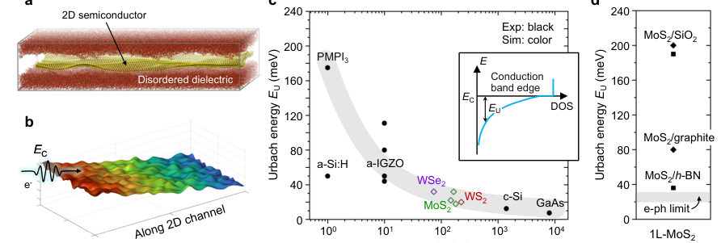
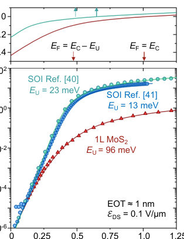
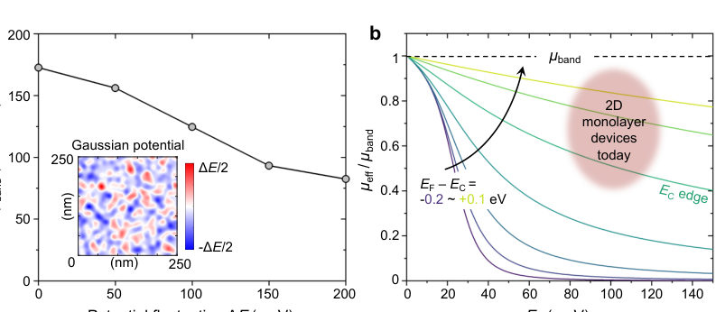
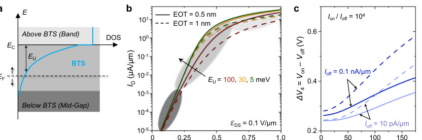
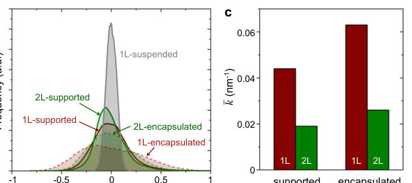
Summary. This work analyzes how energy band tail states (BTS), caused by disorder in 2D semiconductors, fundamentally limit the energy efficiency and mobility of nanoscale transistors. By developing a detailed electrical model, the authors quantify this limitation using the Urbach energy ($E_U$) and propose material and structural engineering solutions, such as using bilayers or strain, to overcome these inherent disorder-related barriers.
Why it may be interesting. While focused on solid-state electronics, the core physics—disorder-induced localization and transport limitations—is highly relevant to understanding quantum transport in disordered quantum materials, which shares mathematical parallels with localization phenomena studied in condensed matter theory.
Main problem. The paper addresses the fundamental limitations on charge transport and transistor operation in two-dimensional (2D) semiconductors caused by energy band tail states (BTS). These states arise from spatial potential inhomogeneity in the material environment.
Main result. BTS cause reduced effective mobility and limit the sharpness of transistor turn-on, setting a fundamental limit on energy-efficient operation. However, these effects can be mitigated by engineering the system using higher gate capacitance, strain, or by using bilayer channels if the band tail energy spread is reduced below ~50 meV.
Method. The authors developed and applied a physics-based electrical transport model modified to incorporate the exponential tail density of states (DOS) associated with BTS, comparing theoretical predictions to experimental measurements.
Model / system. The study focuses on ultrathin, monolayer 2D semiconductors (like MoS2) operating as transistors. The model explicitly accounts for the energy band tail states (BTS), characterized by the Urbach energy ($E_U$), which blurs the ideal sharp band edges.
Key observables. Reduced effective mobility ($\mu_{ ext{eff}}$), 'slow' transistor turn-on characteristics, and the magnitude of the Urbach energy ($E_U$).
Important parameters / regimes. Urbach Energy ($E_U$), which is significantly higher ($\sim 100$ meV) in monolayer 2D semiconductors compared to bulk silicon ($\sim 10$ meV).
Assumptions / limitations. The analysis assumes the BTS density of states follows an exponential decay, and the electrical model assumes negligible contact resistance.
Figures summary. Figures illustrate the physical origin of BTS, compare $E_U$ vs. mobility for various semiconductors, and show how the BTS effect degrades transistor performance (e.g., $I_D$ vs. $V_{GS}$ curves).
Paper structure. The paper establishes the physical problem (BTS causing limitations), develops a modified electrical transport model incorporating the exponential DOS, analyzes the resulting performance degradation (mobility reduction, slow turn-on), and concludes with design guidelines for mitigation.
We propose that the path to realizing the full potential of two-dimensional (2D) electronics lies in understanding and mastering their energy band tail states (BTS). Unlike silicon, which benefits from sharp band edges (Urbach energy $E_\rm U$ ~ 10 meV), today's monolayer 2D semiconductors have rough band edges ($E_\rm U$ ~ 100 meV) caused by spatial potential inhomogeneity. Comparing a physics-based electrical model to experiments, we demonstrate that BTS cause reduced effective mobility and "slow" transistor turn-on with excessive gate voltage in monolayer 2D transistors, which sets a fundamental limit for their energy-efficient operation. We also show that BTS effects in 2D transistors could be mitigated with higher gate capacitance, with strain engineering, and by using bilayer instead of monolayer 2D channels, as long as $E_\rm U$ is reduced below ~ 50 meV. This work provides a theoretical framework and design guidelines to navigate these fundamental limits, and to enable successful integration of 2D semiconductors into low-power nanoelectronics.
Authors: Rongkun Han, Mingsong Zhang, Dahai Wei, Yuan Lu, Wenxu Zhang, Jianhua Zhao
Type: both · Category: other · PDF: https://arxiv.org/pdf/2610.12031v1
Analysis basis: full PDF text, analyzed in chunks
Topic relevance: analog quantum simulation 1/5
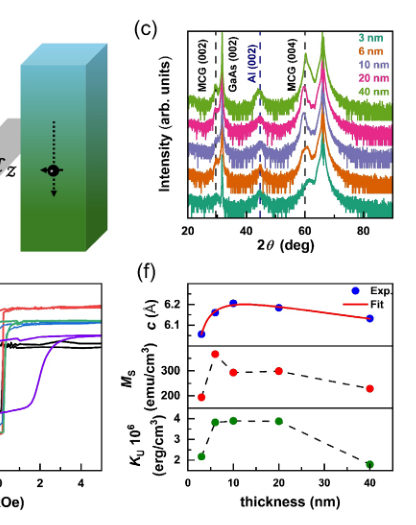
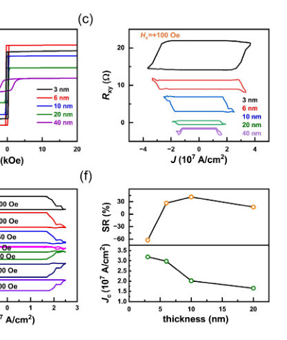
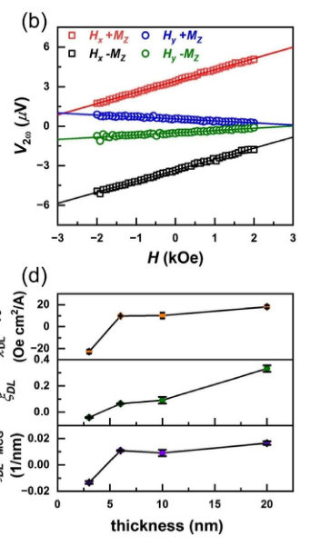
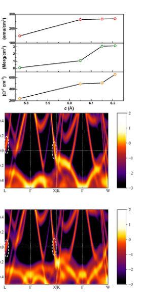
Summary. This work demonstrates that the polarity of the spin-orbit torque in a magnetic single layer can be precisely controlled by engineering the structural symmetry through lattice strain. By analyzing the MnCoGa alloy, the authors show that the reversal of SOT polarity is due to changes in the lattice distortion gradient, providing a powerful, structure-based degree of freedom for spintronic device design.
Why it may be interesting. While focused on condensed matter magnetism, the concept of using structural symmetry breaking (a geometric/topological constraint) to control a macroscopic transport property (SOT polarity) is analogous to engineering boundary conditions or symmetries in quantum simulation setups.
Main problem. The core problem is controlling the magnitude and polarity of the spin-orbit torque (SOT) for efficient magnetization manipulation in spintronic devices.
Main result. The SOT polarity can be reversed by controlling the lattice strain and structural symmetry of the single-layer magnetic material, rather than relying solely on the sign change of the intrinsic spin Hall conductivity.
Method. The study combines first-principles calculations (DFT) to model intrinsic spin Hall conductivity with experimental measurements (Varying thickness, transport measurements) to observe SOT switching behavior.
Model / system. The system is a single-layer Mn1.6Co1.4Ga (MCG) Heusler alloy grown on a substrate, whose structural evolution (lattice strain/distortion) is key to the observed physical properties.
Key observables. Damping-like torque efficiency ($\chi_{DL}$), magnetization switching polarity, and the lattice constant/distortion gradient as a function of film thickness.
Important parameters / regimes. Film thickness (3-20 nm), lattice strain/tetragonal distortion, and the structural symmetry breaking mechanism.
Assumptions / limitations. The SOT is governed by a symmetry-dependent conversion of spin current into torque, and the intrinsic SHC alone is insufficient to predict the polarity reversal.
Figures summary. Figures illustrate XRD results showing c-axis change with thickness, magnetization switching curves showing polarity reversal, and theoretical plots linking SHC and torque coefficients to lattice distortion.
Paper structure. The paper establishes the need for SOT control, presents the material system and measurement techniques, theoretically calculates SHC dependence on distortion, and finally links the observed thickness-dependent SOT polarity reversal to the sign change in the lattice distortion gradient.
Controlling the magnitude and polarity of spin-orbit torque (SOT) is essential for manipulating magnetization in spintronic devices. Here, we realize bulk spin-orbit torque (SOT) in a single-layer Mn1.6Co1.4Ga (MCG) Heusler alloy and achieve lattice strain-controlled reversal of SOT polarity. SOT-driven magnetization switching is achieved over a thickness range of 3-20 nm, with the switching polarity reversed between the strongly strained ultrathin regime and thicker films. First-principles calculations reveal a sizable intrinsic spin Hall conductivity (SHC) in MCG originating from its topological band structure, which is enhanced by the tetragonal distortion without changing sign. Together with the thickness-dependent structural evolution, we demonstrate that the reversal of SOT polarity does not originate from a sign change of the SHC, but rather from lattice distortion induced symmetry breaking that modifies the conversion of spin current into a net bulk SOT, thereby controlling its polarity. These results establish strain-controlled structural symmetry as an additional degree of freedom for tuning bulk SOT in magnetic single layers.
Authors: S. I. Simak, Utkarsh Singh
Type: theory · Category: numerical methods · PDF: https://arxiv.org/pdf/2610.11733v1
Analysis basis: full PDF text, analyzed in chunks
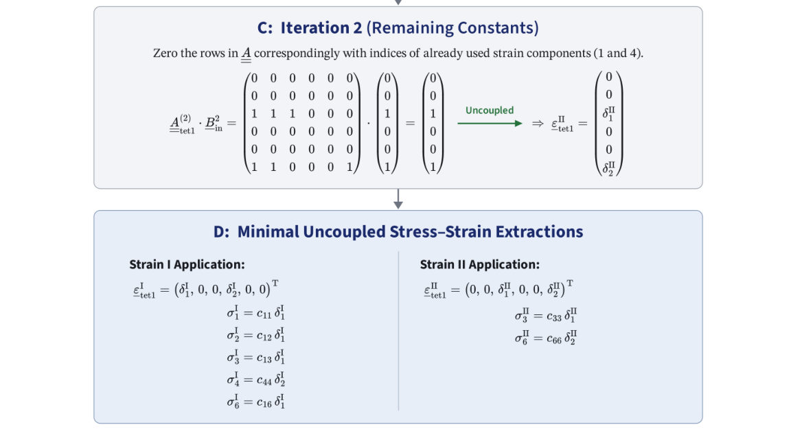
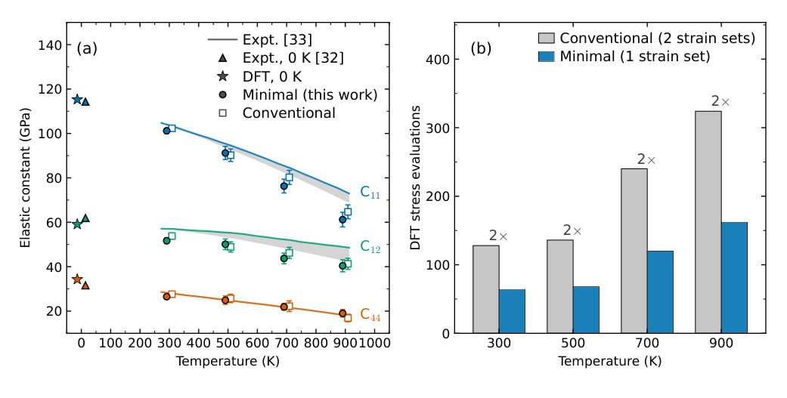
Summary. This paper presents a general, algorithmic method to calculate the minimum set of strain configurations needed to determine a material's second-order elastic constants from first-principles calculations. By analyzing the symmetry structure of the elastic stiffness matrix, the authors ensure that each constant is determined independently, leading to significant reductions in the number of required computational steps, especially at finite temperatures.
Why it may be interesting. While focused on solid-state physics, the core contribution is a highly systematic and general algorithmic framework for minimizing experimental/computational inputs (strain configurations) to solve a complex physical parameter set, which is a valuable computational methodology.
Main problem. The paper addresses the challenge of determining the minimum number of strain configurations required to extract second-order elastic constants from first-principles stress-strain calculations without introducing algebraic coupling between the constants.
Main result. A general, algorithmic method was developed that systematically generates the minimal set of uncoupled strain patterns for all 230 crystallographic space groups, often leading to significant reductions in required computational effort compared to conventional schemes.
Method. The method operates by analyzing the sparsity structure of the symmetry-reduced elastic stiffness matrix and iteratively constructing admissible strain vectors to ensure that each independent elastic constant is determined from a single, uncoupled stress component.
Model / system. The study concerns the elastic response of crystalline solids, modeled using the stress ($\sigma$) and strain ($\varepsilon$) tensors, which are related by the elastic stiffness tensor ($c_{ijkl}$). The calculations are based on first-principles stress-strain derivatives, applicable at both zero and finite temperatures.
Key observables. Second-order elastic constants ($c_{ijkl}$), stress ($\sigma_{ij}$), and strain ($\varepsilon_{ij}$).
Important parameters / regimes. The strain space is six-dimensional, and the method is benchmarked across all 230 crystallographic space groups.
Assumptions / limitations. The method assumes the linear-elastic regime for the stress-strain derivatives, although it can be extended to finite temperatures using ensemble-averaged thermodynamic stresses.
Figures summary. Figures conceptually illustrate the minimal, uncoupled stress-strain scheme for specific symmetries (e.g., Tetragonal-I) and compare the required number of DFT stress evaluations between the minimal and conventional schemes, showing significant savings at finite temperatures.
Paper structure. The paper introduces the problem by comparing existing methods (ASESS, ULICS, OHESS) and then details the novel algorithmic approach based on the stiffness matrix sparsity. It demonstrates the method's application across all 230 space groups, benchmarks its efficiency, and discusses extensions to finite temperatures.
We have developed a general algorithm for constructing the minimum number of strain configurations required to extract second-order elastic constants from first-principles stress-strain calculations without algebraic coupling between the constants targeted for extraction. The method operates on the sparsity structure of the symmetry-reduced elastic stiffness matrix, represented by an auxiliary binary matrix, and generates admissible strain patterns algorithmically rather than prescribing separate strain sets for individual crystal symmetries. Each independent elastic constant is obtained from a single stress component, while additional stress relations generated by the same deformation provide internal consistency checks. Because the six-dimensional strain space contains only 2^6-1=63 non-empty strain patterns, the minimality of the resulting sets can be verified exactly for every elastic-symmetry type considered. The construction reproduces established high-efficiency strain sets in cases where they are minimal and yields improved sets for symmetry classes in which previously tabulated schemes require additional configurations. Because the formulation is based on stress-strain derivatives, it can also be readily extended to finite temperatures using consistently sampled ensemble-averaged thermodynamic stresses. Explicit strain sets are derived for all elastic-symmetry types spanning the 230 crystallographic space groups, and their accuracy and computational efficiency are benchmarked against established approaches.
Authors: Laurent Souqui, Lewis J. Adams, Andreas Tsampanakis, David Rehnlund Maibach, Per Eklund
Type: experiment · Category: other · PDF: https://arxiv.org/pdf/2610.11654v1
Analysis basis: full PDF text, analyzed in chunks

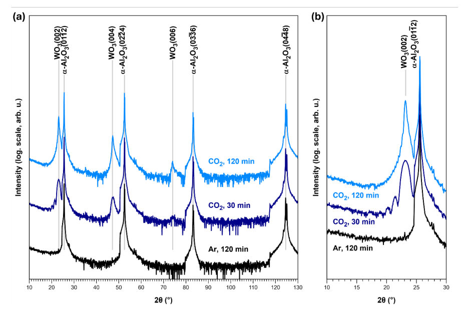
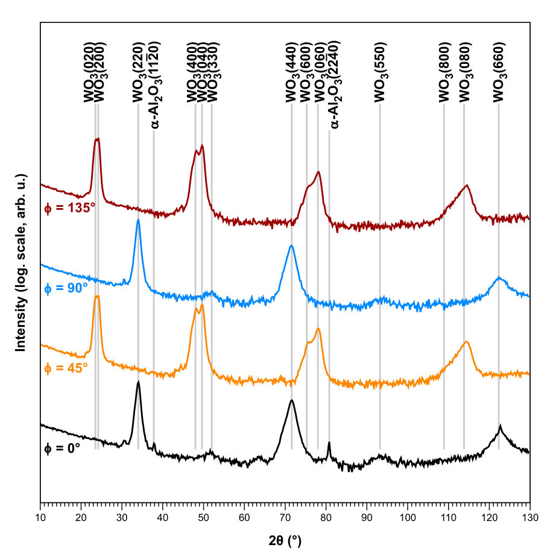
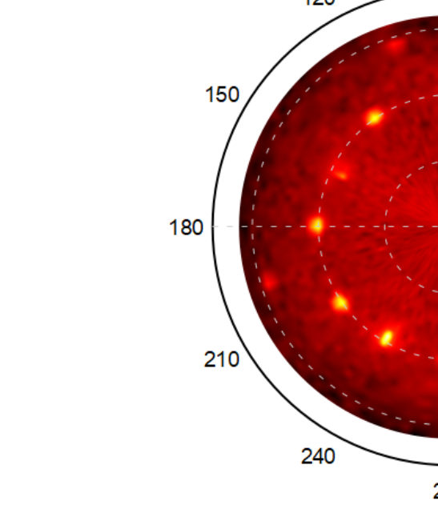
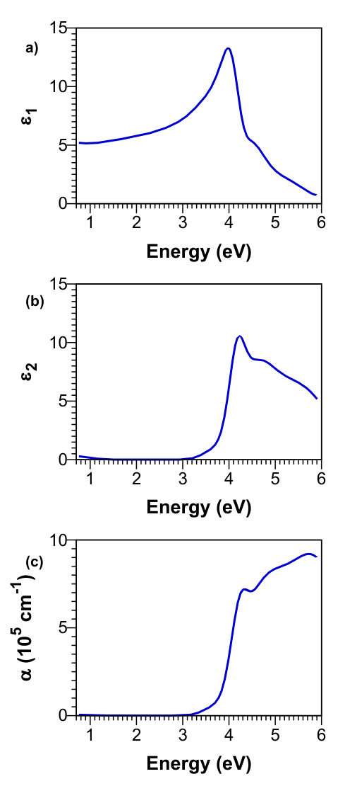
Summary. This paper reports the successful epitaxial growth of WO3 thin films on r-plane sapphire using a hot-filament CVD method with CO2 as the precursor. Characterization confirmed the film's crystalline quality, epitaxial orientation, and optical properties, showing transparency in the visible range and a band gap consistent with stoichiometric WO3.
Why it may be interesting. While primarily materials science, the precise control over thin film growth, crystallinity, and optical band structure using controlled chemical precursors (CO2) is relevant to developing quantum optical components or substrates for quantum devices.
Main problem. The study aimed to demonstrate the epitaxial growth of WO3 thin films on r-plane sapphire using a hot-filament metal-oxide deposition (HFMOD) technique with CO2 as the precursor.
Main result. Epitaxial WO3 films were successfully grown with a low growth rate, exhibiting optical transparency in the visible spectrum and confirming crystal structures consistent with orthorhombic or monoclinic phases.
Method. The films were deposited using hot-filament CVD, and characterization involved X-ray Diffraction (XRD) for structural analysis and Variable-angle Spectroscopic Ellipsometry (VASE) for optical property measurement.
Model / system. The physical system is the deposition of WO3 thin films onto r-plane sapphire (alpha-Al2O3) using a hot-filament reactor. The growth process is controlled by the reaction of tungsten wires with CO2 at elevated temperatures.
Key observables. Optical constants (epsilon_1, epsilon_2), absorption coefficient, epitaxial relationships (e.g., WO3(001)//alpha-Al2O3(0112C2)), and crystal phase identification (monoclinic/orthorhombic).
Important parameters / regimes. Low growth rate of 0.25 nm/min; substrate temperature of 450°C; measurement range up to 5.9 eV.
Assumptions / limitations. The primary assumption is that CO2 acts as the necessary oxidizing species for the deposition reaction, confirmed by comparison with Ar deposition.
Figures summary. Figures show XRD scans comparing CO2 vs. Ar deposition, GID patterns confirming epitaxial relationships, pole figures detailing crystal orientation, and VASE plots showing the energy dependence of the dielectric function components.
Paper structure. The paper follows a structure of demonstrating the deposition process, characterizing the crystal structure using XRD (including epitaxial relationships), and characterizing the optical properties using VASE to confirm material stoichiometry and band gap.
The deposition of epitaxial films of WO3 by hot-filament metal-oxide deposition using CO2 as a precursor was demonstrated. The films were obtained at a low growth rate of 0.25 nm/min. The optical properties of the film were assessed by variable-angle spectroscopic ellipsometry, indicating transparency across the visible spectrum and high absorption above 3 eV.
Authors: Takumi Ichikawa, Daisuke Takegami, Gen Nishijima, Shunsuke Kawakami, Tsutomu Nojima, Yuji Tsuchiya, Satoshi Awaji, Fuyuki Ando, Ken-ichi Uchida, Yuya Hattori, Yoshikazu Mizuguchi
Type: both · Category: other · PDF: https://arxiv.org/pdf/2610.11259v1
Analysis basis: full PDF text, analyzed in chunks
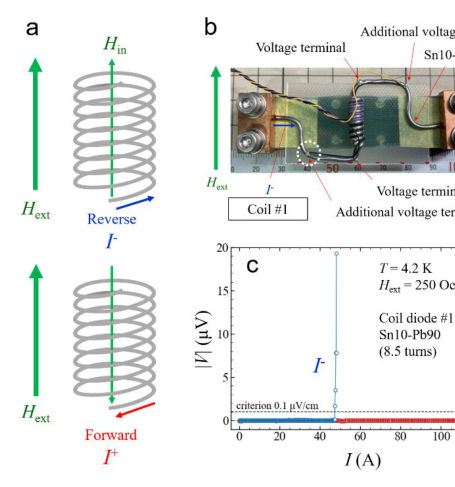
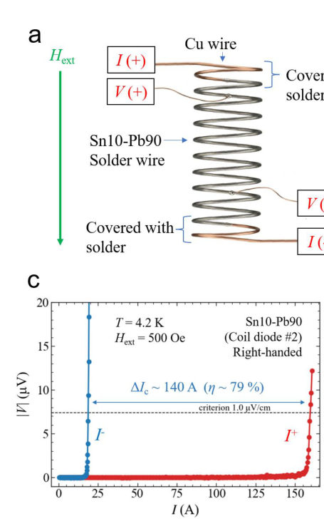
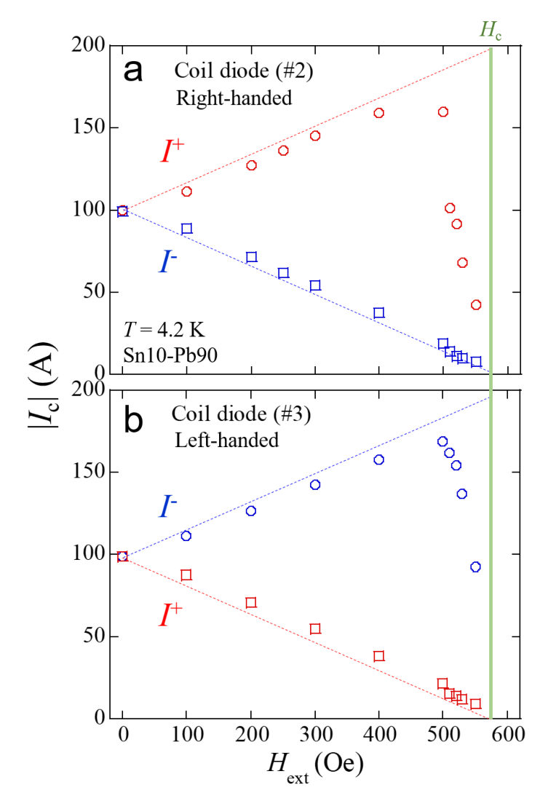
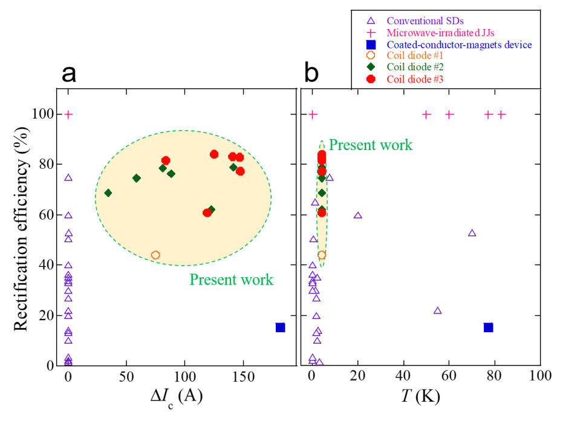
Summary. This work introduces a coil-shaped superconducting wire device to enhance supercurrent rectification (SDE) for power electronics. By engineering the coil geometry, the device achieves high rectification efficiency ($\eta$) and a large critical-current difference ($\Delta I_c$) under significant external magnetic fields. The combination of FEM simulations and precise transport measurements validates this approach for next-generation superconducting power applications.
Why it may be interesting. While focused on classical superconducting electronics, the detailed modeling of non-linear, field-dependent critical currents and the use of advanced electromagnetic simulations are relevant to understanding non-equilibrium dynamics in condensed matter systems.
Main problem. The goal is to achieve high rectification efficiency ($\eta$) and a large critical-current difference ($\Delta I_c$) simultaneously in superconducting diodes (SDs) for practical superconducting power electronics.
Main result. The proposed coil-shaped superconducting wire device demonstrated high performance, achieving $\eta = 79\%$ with $\Delta I_c = 140 ext{ A}$ at $500 ext{ Oe}$, confirming its potential for large-current applications.
Method. The study combines experimental transport measurements (V-I curves) with detailed Finite Element Method (FEM) simulations using COMSOL Multiphysics to model the magnetic field distribution.
Model / system. The physical system is a coil-shaped superconducting wire (initially $ ext{Sn}{10} ext{-Pb}$) and the field generated by the coil itself.}$ solder), where the Superconducting Diode Effect (SDE) arises from the non-reciprocity of the critical current due to the interaction between an external magnetic field ($ ext{H}_{ ext{ext}
Key observables. Rectification efficiency ($\eta$), critical-current difference ($\Delta I_c$), and the superconducting critical current ($I_c$) dependence on $ ext{H}_{ ext{ext}}$.
Important parameters / regimes. External magnetic field ($ ext{H}{ ext{ext}}$) up to $530 ext{ Oe}$; superconducting critical field ($H_c$) for $ ext{Sn}$ solder ($\approx 570 ext{ Oe}$).} ext{-Pb}_{90
Assumptions / limitations. The analysis relies on classical electromagnetism for modeling, and the performance is highly dependent on the magnetic field at the inner edge of the coil.
Figures summary. Figures show schematic designs, photographs of the coil diodes, and plots detailing the magnetic field distribution ($H_{total}$) and the dependence of $I_c$ on $H_{ext}$ derived from both simulation and experiment.
Paper structure. The paper first establishes the need for high $\eta$ and $\Delta I_c$. It then presents the coil concept, supported by FEM simulations showing how field compensation leads to non-reciprocity. Finally, it reports experimental measurements on improved coil designs, confirming the high performance metrics.
Superconducting diodes (SDs) are devices that rectify supercurrent through the difference in the superconducting critical current (Ic) between forward and reverse current directions. For bringing such SDs closer to practical superconducting power electronics applications, a combination of both high rectification efficiency (η) and a large Ic difference (ΔIc) is required. Here, we propose and demonstrate a coil-shaped superconducting wire device concept to induce a large SD effect, arising from the compensation between an external magnetic field (Hext) and the field generated by the coil itself. From transport Ic measurements on coil-shaped SDs based on a Sn10-Pb90 solder wire, we achieved a η of 79% with a ΔIc of 140 A at Hext = 500 Oe (coil #2) and a η of 84% with a ΔIc of 125 A at Hext = 530 Oe (coil #3), confirming high rectification values at large supercurrents. The large-current high-efficiency SDE in the coil-shaped SDs will be highly useful for developing the potential field of supercurrent power electronics.
Authors: Yifan Gao, Jin Yan, Junjie Wei, Yifan Zhang, Zhiyuan Zhou, Tong Zou, Ruiyue Chu, Gui Wang, Kaiwen Shen, Zhiwei Zhang, Fang Chen, Yingfen Wei, Hao Jiang, Xumeng Zhang, Ming Wang, Liyang Liao, Jingli Wang, Yijun Yu, Wu Shi, Qi Yao, Xiaobing Chen, Qihang Liu, Yizheng Wu, Yuhang Li, Xufeng Kou, Cheng Song, Xianzhe Chen, Qi Liu, Xincheng Xie, Ming Liu
Type: experiment · Category: strongly correlated electrons · PDF: https://arxiv.org/pdf/2610.11341v1
Analysis basis: full PDF text, analyzed in chunks
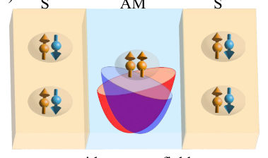
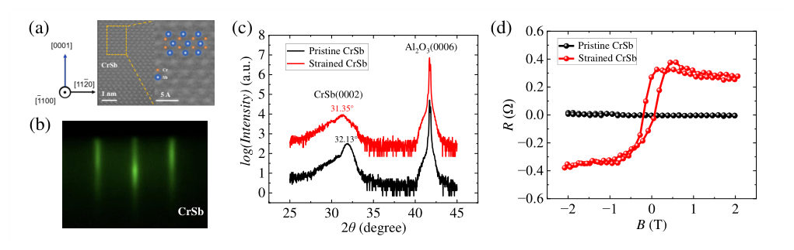
Summary. This paper reports on the realization of long-distance supercurrents in a Josephson junction utilizing the altermagnetic material CrSb. By applying epitaxial strain, the researchers engineered the material to promote spin-triplet Cooper pairing, allowing supercurrent flow over distances far exceeding conventional limits. This work establishes altermagnets as a promising platform for next-generation superconducting spintronics devices.
Why it may be interesting. The work connects concepts from magnetism (altermagnetism) and superconductivity (Josephson effect) in a way that suggests novel mechanisms for controlling superconducting properties using magnetic order, which is highly relevant to correlated electron physics.
Main problem. The research aims to demonstrate long-distance supercurrent transport in a Josephson junction using an altermagnetic material, circumventing the stray magnetic field issues of conventional ferromagnets.
Main result. The authors observed a dissipationless supercurrent across a 150 nm spacer in a strained CrSb junction, significantly exceeding the conventional spin-singlet coherence length, providing evidence for triplet-mediated coupling.
Method. The study employed four-terminal transport measurements on epitaxial Josephson junctions, combining structural characterization (XRD, RHEED) with electrical transport measurements under varying temperature and magnetic fields.
Model / system. The physical system is a Josephson junction ($ ext{Nb} - ext{CrSb} - ext{Nb}$) where $ ext{CrSb}$ acts as the weak link. The key physics involves the unique properties of altermagnets, which exhibit zero net magnetization but possess momentum-dependent spin splitting, enabling unconventional spin-triplet Cooper pair formation.
Key observables. Dissipationless supercurrent magnitude, magnetic-field-induced quantum interference pattern (Fraunhofer pattern), and the superconducting transition temperature ($T_c$).
Important parameters / regimes. Spacer distance ($ ext{up to } 150 ext{ nm}$), temperature range ($250 ext{ mK}$ to $750 ext{ mK}$), and strain magnitude ($\approx 2.4\%$ c-axis expansion).
Assumptions / limitations. The supercurrent is mediated by unconventional spin-triplet Cooper pairs whose coherence length is not limited by the exchange interaction, and that strain engineering can effectively rotate the spin correlations.
Figures summary. Figures illustrate the structural characterization (lattice matching, strain via XRD, anomalous Hall effect) and the electrical transport results, including $R-T$ curves, $I-V$ curves, and the characteristic Fraunhofer pattern in the $R(B, I)$ map.
Paper structure. The paper progresses from establishing the theoretical advantage of altermagnets over ferromagnets, through detailed structural characterization confirming strain, to presenting the core transport measurements that confirm long-distance, triplet-mediated Josephson coupling.
Altermagnetic materials, characterized by vanishing net magnetization and momentum-dependent spin splitting, provide a unique platform for realizing unconventional superconducting states without the detrimental stray fields. Here, we demonstrate long-distance Josephson supercurrent transport through epitaxial thin films of the strained altermagnet CrSb. We observe a dissipationless supercurrent across a lateral spacer distance of 150 nm in a CrSb-based Josephson junction, exceeding the conventional spin-singlet coherence length by nearly two orders of magnitude. This supercurrent is further accompanied by a well-defined magnetic-field-induced quantum interference pattern, providing direct evidence for genuine Josephson coupling. Our results reveal altermagnets as a promising route toward generating long-distance supercurrents without macroscopic magnetic stray fields, opening new opportunities for superconducting spintronic applications.